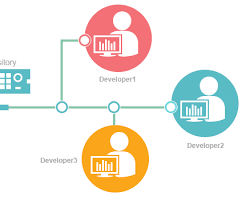
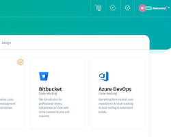
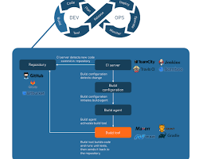
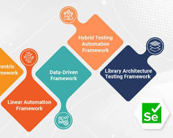

In this chapter will cover different topics of programming like :
Programming also known as coding is the process of writing instruction to a device such as : computers / mobile device. This instrutions are written in a programming language, which is then interpreted by the device. These set of instructions are also called : program, application or computer program.
A computer program can be anything what is written in code, like : websites, games, phone applications, etc. The device that you're currently reading this lesson with is a running website to print it on your screen.
The main purpose of a programming language is : for developers to build intructions to send to a device. Devices only can understand binary ( 1s and 0s ), and for most developers that's not a very effcinet way to comunicate. Programming languages are a vehicle for communication between humans and computers.
Programming languages come in different formats and may serve different purposes. For example, JavaScript is primarily used for web appications, white Bash is primarily used for operating systems ( OS ).
Low-level languages typically require fewer steps than high level languages for a device to interpret instructions. However, what makes high level languages popupar is their readability and support.
The following code illustrates the difference bewteen a high level language ( JavaScript ) and low level language with ARM assembly code.
JavaScript example:
let number = 10
let n1 = 0, n2 = 1, nextTerm;
for (let i = 1; i <= number; i++) {
console.log(n1);
nextTerm = n1 + n2;
n1 = n2;
n2 = nextTerm;
}
Assembly example:
area ascen,code,readonly
entry
code32
adr r0,thumb+1
bx r0
code16
thumb
mov r0,#00
sub r0,r0,#01
mov r1,#01
mov r4,#10
ldr r2,=0x40000000
back add r0,r1
str r0,[r2]
add r2,#04
mov r3,r0
mov r0,r1
mov r1,r3
sub r4,#01
cmp r4,#00
bne back
end
Both example are printing a Fibonacci sequence up to 10.
A Fibonacci sequence is defined as a set of numbers such that each number is the sum of the two preceding ones, starting from 0 and 1.
The basic building blocks of any computer program can be broken down into these core components:
Instrunctions (Statements) : These are the fundamental lines of code that tell the computer what to do. Each statement performs a specific action, like assigning a value to a variable, performing a calculation, or checking a condition. Imagine them like tiny steps in a recepie - follow them one by one and you get the desire outcome.
Variables : These act like named containers that store data the program uses during it's execution. They can hold numbers, text or even more complex things. Think of them as labeled boxes where you can store ingredients (data) for your recepie (program).
Operators : These are symbols that manipulate data. They perform mathematical operations (+, -, *, /) or comparisons (==, !=, <, >). Just like in math, operators combine or modify values in our program.
Control Flow : This refers to the way the program executes it's instructions. Programs don't just blindly follow a straight line - they can make decisons based on conditions and repeat actions using loops. Control flow structures like if-statements, for-loops, and while-loops allow your program to be flexibile and adapt.
Functions : These are reusable blocks of code that perform specific tasks. They can take inputs ( data ) and produce output ( results ). Think of them as sub-recepies within your main recepie. You can create a function to perform a specific task ( washing dishes ) and call it from your main recipie ( cooking dinner ) multiple times.
Comments : These are lines of text ignored by the computer but are meant for human readers. They explain what the code is doing, making it easier to understand and maintain. Comments are like helpful notes you write in your recepie book to explain specific steps or substitutions.
These basic elements are like the building blocks of Legos - you can combine them in many ways to create a wide variety of programs, from simple calculatos to complex games or simulations.
There are many great software and tools out there for developers, but some of the most useful include:
Integrated Development Environments (IDEs) : An IDE is a comprehensive software program that combines a code editor, debugger, compiler, and other tools into a single interface. This can make development much more efficient, as you don't have to switch between different programs to write, test, and debug your code.
Some popular IDEs include:
Version control systems (VCS) : A VCS like Git lets you track changes in your code over time. This is crucial for collaboration, as multiple developers can work on the same project without accidentally overwriting each other's work. It's also great for reverting to previous versions of your code if needed.
Popular VCS options include:
Code hosting platforms : These platforms like GitHub and GitLab allow you to store your code online, collaborate with other developers, and track changes to your code over time. They also offer features like issue tracking, project management, and wikis.
Build automation tools : These tools can automate repetitive tasks such as compiling your code, running tests, and deploying your application. This can save developers a lot of time and effort.
Some popular build automation tools include:
Testing frameworks : These frameworks provide tools for writing and running tests for your code. This helps to ensure that your code is working correctly and to catch bugs early in the development process.
Some popular testing frameworks include:
These are just a few of the many great software and tools available for developers. The best tools for you will depend on your specific needs and preferences.